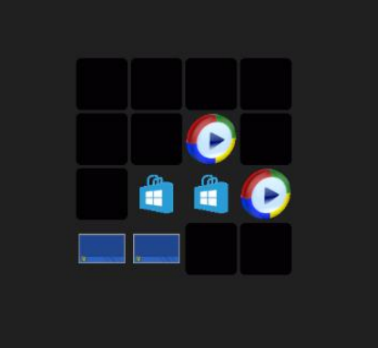
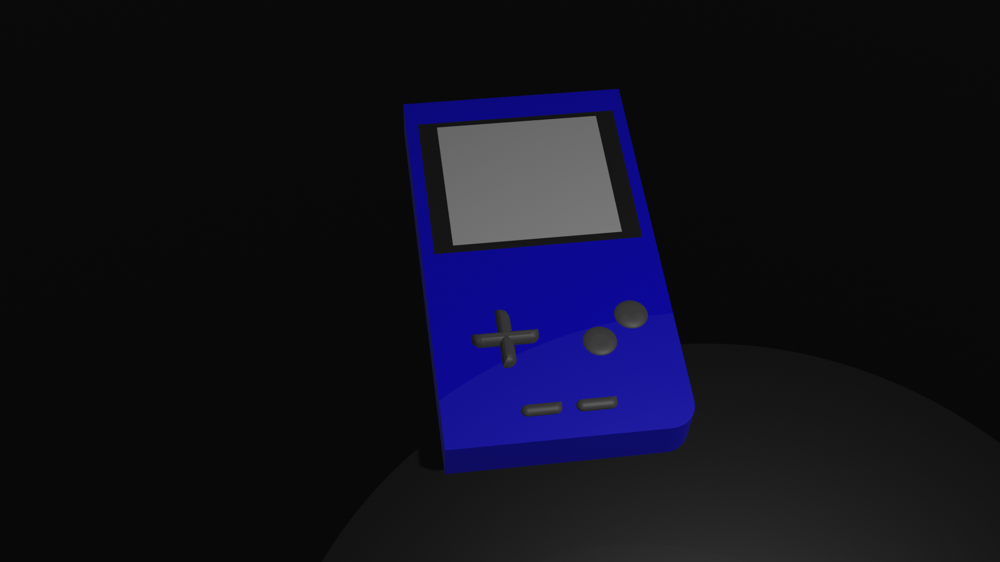
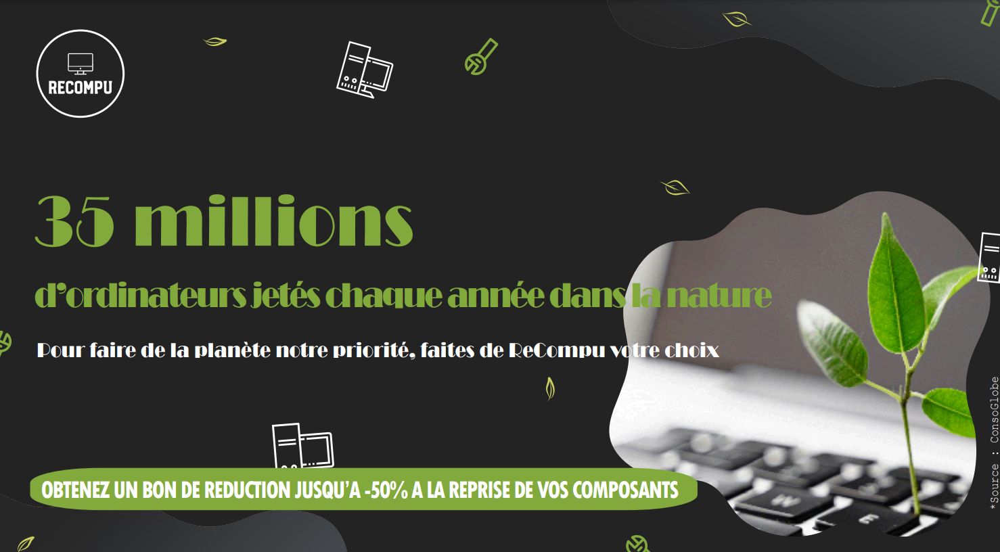

A propos
|
Qui je suis et pourquoi me réorienter ?
|
Bonjour, je m'appelle Joshuoy Martin j'ai 18 ans, je suis actuellement en 1ere année de but informatique au sein de l'iut de fontainebleau.
Je souhaite me réorienter car malheureusement la formation proposée me correspond pas,
je me vois mal travailler dans l'informatique, je trouve ce milieu trop monotone,
je souhaite travailler avec les gens en général, avoir un milieu plutôt extraverti.
Lors de mon année de BUT Informatique je me suis rendu compte ce qu'il me plaisait le plus était les SAé qui consistent en la création de quelque chose
par exemple une entreprise avec un site ou la création d'une affiche de publicité,
ce que j'aime aussi énormément c'est le brainstorming lorsque tout le groupe dit leurs idées et qu'on les choisisse ensemble.
|
|
Pourquoi avoir choisit le BUT MMI ?
|
J'ai toujours utilisé internet pour regarder des lives ou bien des vidéos j'ai toujours voulu travailler dans ce domaine,
j'ai vu que le BUT MMI etait un BUT basé sur l'audiovisuel c'est pour cela que je pense que ce but me correspond mieux.
|
|
Pourquoi le but MMI au sein de l'iut de sénart-fontainebleau ?
|
Je suis venu aux portes ouvertes du but MMI j'ai pu voir l'ambiance qui était tres solidaire et convivial,
le fait aussi que les professeurs sont proche de leurs éléves qui veulent réussir.
Les SAé proposées m'intérresse aussi énormement par exemple la création d'une association sur des themes tres important pour moi(LGBTQIA+, le féminisme et le racisme),
et la création d'une entreprise pour vendre de la biere qui peut être un projet tres intérresent dans l'aspect marketing et dans la création numérique.
|
|
Quel sont mes centres d'intéret ?
|
-La volcanologie
-Le cinéma
-La culture nippone et coréene
-E-sport
-La musique
|
|
Qu'est ce que je fais qui peut m'aider en BUT MMI
|
J'ai déja de bonne connaissance en langage WEB (HTML5, CSS3, JavaScript et PHP), et je commence à
utiliser les logiciels Blinder 3.5 et Photoshop afin d'avoir des connaissances avant de commencer l'année.
|
Mes projets
|

|
Jeu de paire en C
Le jeu de paires en C, lors de mon année en BUT informatique on a eu comme SAé la création d'un jeu de paires en langage C, pour le créer on a du utiliser la bibliothèque graphique de l'IUT afin de faire le
côté graphique du jeu, si vous voulez en voir en plus voici le rapport de la SAé : ici.
|
Création d'une entreprise et d'un site
On a eu comme SAé la création d'une entreprise factice et de son site, on n'a dû faire le business angel et le business modèle de notre entreprise.
Notre s'appelle CrypoLoc c'est une entreprise de location de matériels permettant au particulier de miner de la cryptomonnaie chez eux. Pour
voir notre site cliquez ICI.
|

|
|

|
Game Boy Bleu en 3D
J'ai fait une game boy bleu en 3D avec le logiciel Blender 3.5,
je me suis beaucoup amusé à réaliser ce projet personnel assez simple mais qui m'a permi d'apprendre les bases du logiciel.
|
Un fiole de potion
J'ai fait une une fiole de potion en 3D avec le logiciel Blender 3.5, j'ai pu apprendre d'avantage sur les textures
et la façon de faire des objets avec des courbes.
|
|
|

|
Affiche de publicité
On a fait une affiche avec mon groupe pour une SAé, elle repressente une affiche de publicité pour une entreprise qui a pour principe une économie circulaire.
Pour réaliser cette affiche nous avons utilisé le logiciel Adobe Illustrator.
|
Mes compétences
Compétences informatiques
Langage de programmation
Langage web
Langage de base de données
Logiciel 3D
Compétences linguistiques